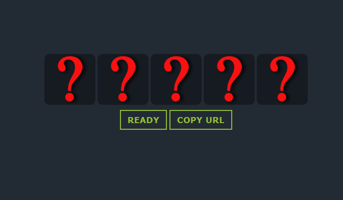

Helicopter
Made in 3ds Max and then implemented in Unreal Engine 4. This R22 Robinson Helicopter is a to scale model of the real helicopter modeled after plans found on the Robinson website. It is implemented in UE4 with a physics engine that is built from
the ground up with no borrowed parts and is controlled by and algorithm that is self-correcting the engine output in relation to height-data inputs.
Replay - a short film
Replay is a shortfilm combining 3D animation and 2D animation. The models for the 3D part were made in MAYA and the 2D animations were made in adobe flash. This was the first group project in year 1 fo my education.
Ready-check.net
Ready-check.net is a website for gamers who game in groups. It facilitates easy to use tools
for making sure everybody is ready before queueing up for a game. It is made entirely from scratch in
jQuery and javascript with a PHP and JSON backend.

CATFLAPP
CATFLAPP is a prototype of the UI for a smart cat flap that would be controlled with an app.
It is made in Adobe xd.
Languages and programs that I have worked with
- HTML
- C++
- Android Studios
- Adobe Photoshop
- PHP
- Java
- Unreal Engine 4
- Adobe xd
- Javascript
- React-native
- MATLAB
- Adobe Illustrator
- MySQL
- openGL
- 3ds Max
- Adobe Premier
- jQuery
- JSON
- MAYA
- Adobe Flash
- p5
- GIT
- Python